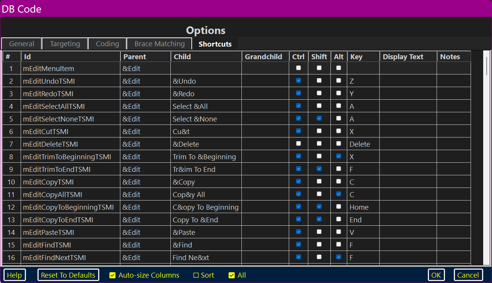

DBCode’s Options dialog’s Shortcuts page allows the user to modify the Menu in three important ways. By default, all menu items have accelerator keys and (where appropriate) keyboard shortcuts; these are all user–modifiable. The user may also change the word or phrase associated with any menu item or subitem.

| The Columns | |||
| Row Number | Variable Identifier | ||
| Parent Name | Child Name | Grandchild Name | |
| Control (Ctrl) Key | Shift Key | Alternate (Alt) Key | Assigned Key |
| Display Text | User–Supplied Notes | ||
| Other Help Pages | |||
Row Number And Variable Identifier Section
There are two cells on this row: “Row Number” and “Variable Identifier”.
Row Number
The “Row Number” cell is not user–editable; it is there just to facilitate default sorting.
Variable Identifier
The “Variable Identifier” cell is not user–editable; it is there so that the application knows which ToolStripMenuItem is affected by the various settings.
Parent, Child And Grandchild Names Section
Parent
The “Parent” cell displays the ToolStripMenuItem’s parent; if it is a top–level menu, it displays its own text. Unless it is a top–level menu, it is read–only.
Child
The “Child” cell displays the child ToolStripMenuItem’s name. If that child has sub–items (i.e., grandchildren exist beneath it), it acts as a submenu header and is read–only.
Grandchild
The “Grandchild” cell displays the grandchild ToolStripMenuItem; it is never read–only.
Key And Modifiers Section
Control (Ctrl)
The “Control (Ctrl)” cell controls whether the keyboard shortcut modifiers contain the control (⟨CTRL⟩) key. If checked, the shortcut does include the modifier.
Shift
The “Shift” cell controls whether the keyboard shortcut modifiers contain the shift (⟨SHIFT⟩) key. If checked, the shortcut does include the modifier.
Alternate (Alt)
The “Alternate (Alt)” cell controls whether the keyboard shortcut modifiers contain the alternate (⟨ALT⟩) key. If checked, the shortcut does include the modifier.
Key
The “Key” cell controls which (probably modified) key is the actual shortcut key.
Other than the function keys (F1–F12 [both Windows and Dragon allow F13–F24 but keyboards rarely include them — they can be used in Advanced Scripting commands]) the user is warned to be incredibly careful if assigning unmodified keyboard shortcuts.
Display Text And Notes Section
Display Text
The “Display Text” cell controls the actual string displayed on the ToolStripMenuItem. By default, Windows usually, but not always, presents a reasonably understandable description of the shortcut key:
| Cut | Ctrl+X |
| Options | Ctrl+Oemcomma |
| Something | Alt+D0 |
Above, “Ctrl+Oemcomma” is probably comprehensible but clumsy at best; “Alt+D0” might better look like:
| Options | Ctrl+, |
| Something | Alt+0 (zero) |
Notes
The “Notes” cell is the place where the user may enter personal notes. These notes are effectively invisible to the application.
Windows does not allow the display of keyboard shortcuts (even using Display Text) for top–level menu items, even when they have them. DBCode offers a workaround. If the user enters a string in the Display Text cell for a top–level menu item it will be automatically added to the actual Text. This does not change the way that Text is actually stored nor the way the Display Text is presented on the manager — it just shows up when the menu is created.
It is important to include a leading space in the Display Text and it is probably a good idea to include two or three leading spaces so that it looks like standard displayed text for the shortcut.
This practice can to be a bit confusing to Dragon. If it sees “Option F2” it will stubbornly ignore “options” or “click options”, absolutely insisting on “option f2” or “click options f2”. However, if the Display Text is parenthetical: “Option (F2)” Dragon happily ignores the parenthetical part and is willing to accept “options” or “click options”